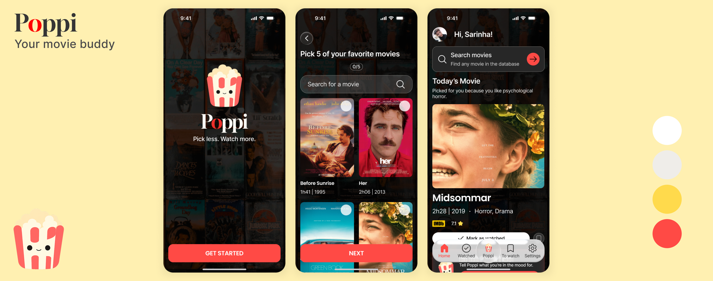
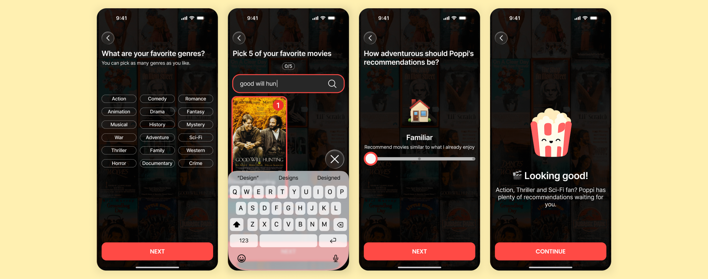
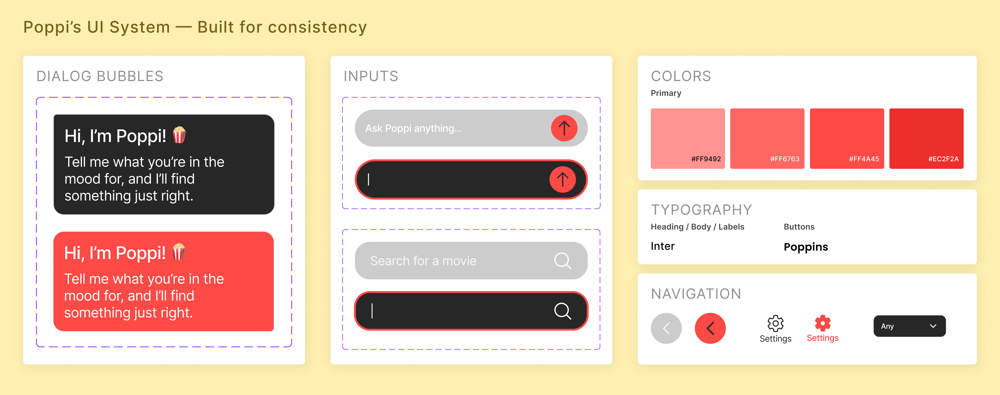
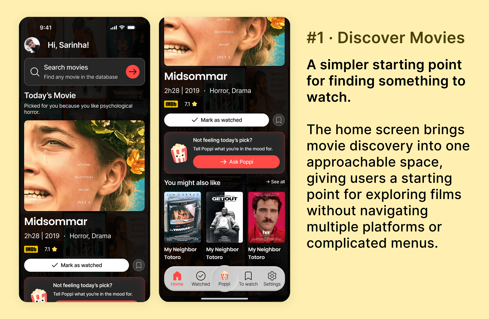
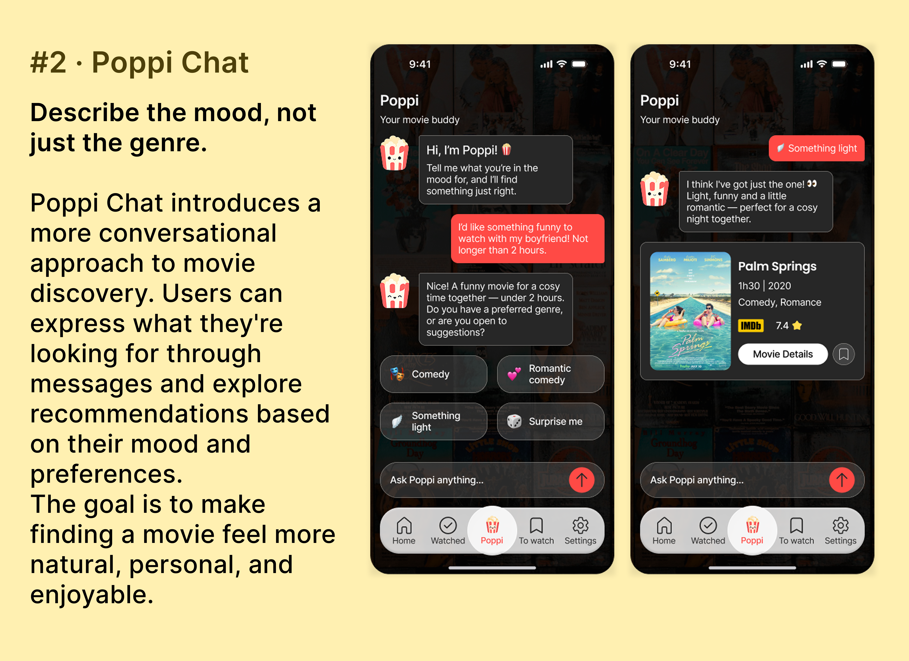
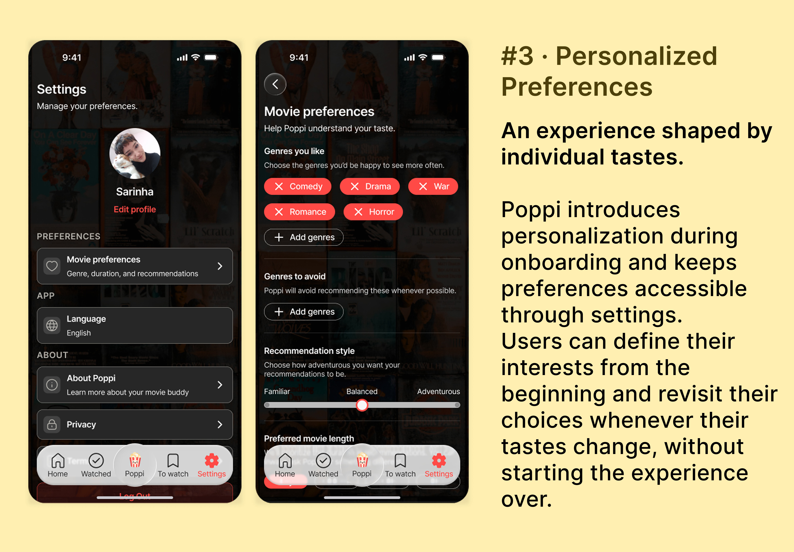
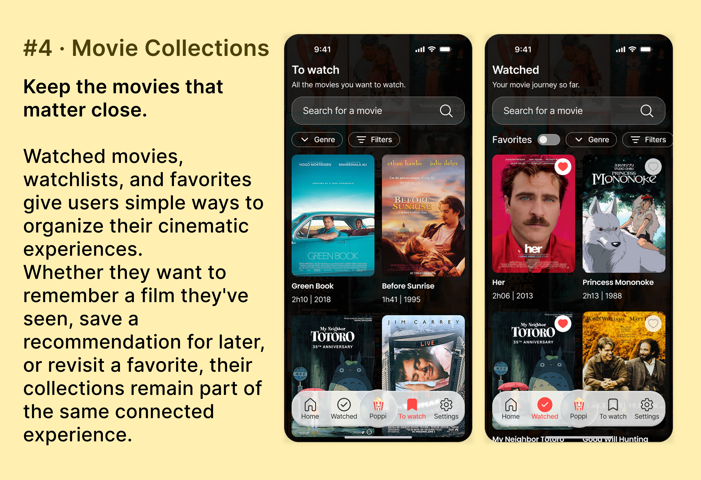

Conversational Discovery
Explore recommendations through mood-based conversations.
Designing Poppi, a movie discovery app built to end endless browsing

| Role | UX/UI Designer |
|---|---|
| Tools | Figma, Codex, GitHub |
| Status | Functional MVP – ongoing |
Poppi is a mobile-first movie companion designed to make film discovery simpler, more personal, and less overwhelming.
Initially conceived as a small UI exploration, it evolved into a functional bilingual MVP combining conversational recommendations, personalized preferences, and personal movie collections.

Movie preferences are personal, but they aren't necessarily static. Someone might have favorite genres and recurring interests while still wanting to explore something different depending on their mood.
I wanted Poppi to provide relevant recommendations from the beginning, without making users feel restricted by their initial choices.
The question I asked myself was:
How might we help people discover movies that truly match their tastes and current mood?
I designed Poppi around three complementary features, bringing movie discovery, personalization, and organization together in one approachable experience.
Explore recommendations through mood-based conversations.
Set preferences early and adjust them as tastes evolve.
Save, organize, and revisit films that matter.
My long-term vision is for Poppi to become an increasingly adaptive movie companion, using viewing history, favorites, and evolving preferences to provide more relevant recommendations over time — while keeping users in control of their experience.

Poppi started as a personal UI exploration, but I soon realized that its limited functionality wasn't enough to fully address the original discovery challenge. I also wanted to push my skills further by designing a more complete, interconnected product.
I approached this evolution through three main stages:
I designed every screen in Figma before implementation, defining the visual identity, interface structure, and key user journeys.
As Poppi evolved, I explored how conversational discovery, personalization, and movie collections could work together as a coherent experience.
I used Codex as an AI-assisted development tool to turn my Figma designs into a functional web application.
My role was to define the intended interactions, communicate requirements, review the implemented experience, and guide refinements. Codex handled code implementation, debugging, and automated technical checks.
I manually tested navigation, movie interactions, localization, and responsive behavior, identifying issues that weren't always visible in Figma.
Testing Poppi on a physical smartphone revealed navigation spacing and virtual keyboard issues that hadn't surfaced during desktop checks. I refined the expected behavior, guided the implementation changes, and validated the updated interactions on my device.
The final MVP brings together conversational recommendations, personalized discovery, and movie organization in a cohesive, mobile-first experience.
Rather than relying on a single way to find movies, Poppi gives users different ways to explore, express their preferences, and keep track of films that interest them.




Poppi transforms the initial discovery concept into a functional movie companion, connecting exploration, personalization, and organization in one place.
The MVP establishes a foundation for a more intuitive and flexible experience, while future user testing will help determine how effectively it addresses the original discovery challenge.
Poppi is still evolving. My next step is to conduct usability testing to identify friction points and refine the overall experience. In the longer term, I'd like to explore more adaptive recommendations informed by viewing history, favorites, and changing preferences — turning Poppi into an increasingly personal movie companion.